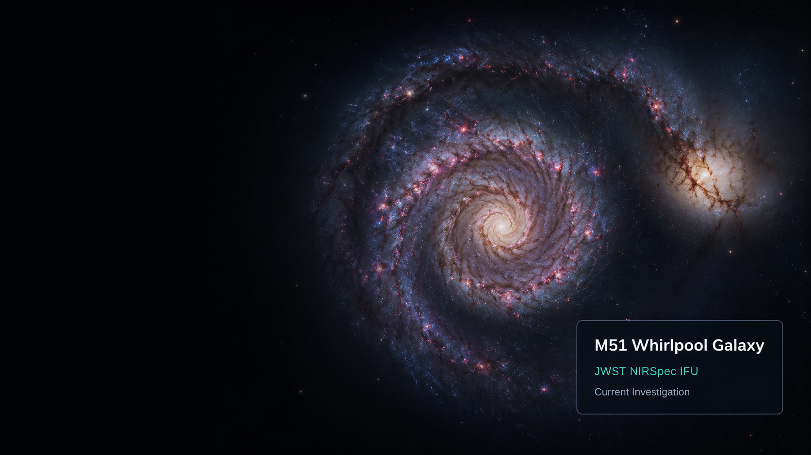

Observations
JWST NIRSpec IFU observations of nearby galaxies searching for supernova signatures.
View Data →COSMIC INTELLIGENCE LAB
Using AI and JWST data to discover and understand supernovae in nearby galaxies.
Explore Current Analysis →
JWST NIRSpec IFU observations of nearby galaxies searching for supernova signatures.
View Data →Machine learning and spectral analysis to detect emission features and identify transients.
See Methods →From candidate detection to physical interpretation and publication of our findings.
Our Results →Identified 3 hydrogen line candidates in the nuclear region.
July 17, 2025G140M resolution at candidate wavelengths: 781 → 1347.
July 17, 2025M51 Level 3 data inspection and spectral extraction.
July 16, 2025